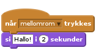
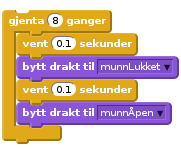
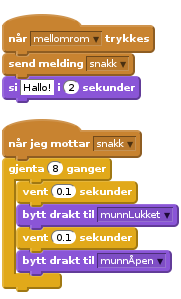
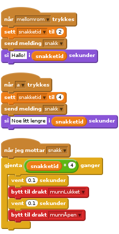
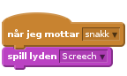

Nivå 4
Scratchkort - Munn som prater
si-kloss.
drakt som har lukket munn. Ved å bytte mellom de to, kan du animere at munnen åpner og lukker seg.
si-klossen til å sende en melding, som den andre klossen kan reagere på.
snakketid hvor lenge monsteret sier noe, og for å kontrollere hvor mange ganger animasjonsløkken er gjentatt.
(Merk at vi multipliserer snakketid med 4 for å være sikkre på at løkken gjentas nok ganger)
Lyd.
Prøv å legge til lyder til andre hendelser, du kan bruke en skummel svevende lyd for et spøkelse som flyr rundt på skjermen! Har du mikrofon på datamaskinen kan du ta opp dine egne lyder, overrask de andre ved å ta opp et høyt monster BRØØØØØØØØØL!!!